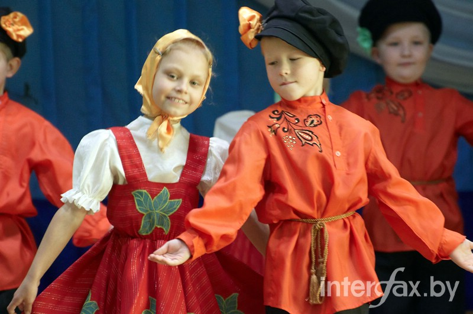

«Помните, главы Родов Великих, что никогда не следует оставлять заботу о всех потомках Родов своих до их телесной и Духовной зрелости. Ибо не окрепшее и не достигшее зрелости подрастающее потомство Родов ваших, не может быть надежной опорой в последующей жизни Родов ваших».
Слово Мудрости волхва Велимудра
Ведическое воспитание мальчиков.
Существует Ведическая система воспитания мальчиков и девочек. Это воспитание совершенно разное. В воспитании мальчиков и девочек есть разница, так же как есть разница между мужчиной и женщиной. Эта разница заключается в том, что в мальчике нужно воспитывать ответственность за общество, за свою будущую жену, за своих будущих детей и увеличивать в целом силу разума, силу познания, силу навыка.
В Ведическом обществе мальчиков с пяти лет отдавали в духовную школу. Мальчика же воспитывал в духовной школе его духовный учитель – человек, который обладает высочайшими качествами нравственности, и для ребенка было самое ужасное не то, чтобы не сделать уроки, или сказать что-то поперек духовному учителю, или отнестись к нему непочтительно. Здесь очень важно понять, что воспитание – это сложная наука, а не просто приказ что-то сделать. Ребенок всегда склонен идти за тем, кто обладает хорошими качествами. И духовным учителем становился тот, кто обладал такими качествами: честностью, ответственностью, добротой, мудростью, простотой, знанием законов, терпением, эрудицией, отсутствием зависти и критицизма, твердостью характера и т. д.
Мальчик, попадая в такую среду, где культивируется практическое реализованное знание, с самого детства становился, похож на своего духовного учителя. Он начинал серьезно себя вести, он понимал, что такое честность, долг, что такое обязанности, он понимал, чем отличается мужчина от женщины, что он должен быть более тверд во всем, более решителен и защищать женщину.
В Ведическом обществе мальчик воспитывался в духовной школе до 25 лет, соответственно он овладевал всем необходимым для него практическим знанием, получал профессию и воспитание в соответствии с его типом характера. Так как он обучался практическому знанию узко направленно, то становился очень хорошим специалистом. И в 25 лет был уже достаточно зрелой личностью.
Еще имеет значение то, что у человека после полового созревания, если он не имеет излишнего контакта с противоположным полом, быстро формируются положительные качества характера. Он становится склонным культивировать в себе нравственность и чистоту.

Мальчик с 13 до 25 лет не может управлять своей половой энергией. То есть он просто идет у нее на «поводу», его тянет воспользоваться противоположным полом и испортить в себе нравственность таким образом. Поэтому детей еще в пять лет, изолировали друг от друга, не давая им возможности общаться, и они росли в своем кругу. Но им давали знание, как надо вести себя с девочками, обо всех аспектах отношений: как надо разговаривать, как контролировать себя и т. д.
Мужчина женился примерно в возрасте 25 лет, а девушка обычно выходила замуж с 14 до 17 - 18 лет, не позже. Согласно ведической концепции считалось и считается сейчас, что женщина способна быть хорошей женой и матерью только в том случае, если тот мужчина, с которым она встречается близко самый первый раз, остается ее мужем.
Здесь надо понять такую вещь, что у женщины половые функции развиваются более сильно уже в юном возрасте до 18 лет, а затем постепенно угасают. У мужчины же они сначала нарастают до 25 лет, а затем угасают. Поэтому у женщины инстинкт жить с семьей и желание любить очень силен с 14 до 18 лет. В это время у нее формируется глубокая привязанность к мужу. Если до этого времени она не выходит замуж, то начинается угасание необходимости иметь защитника в жизни, быть замужем становится далеко не главным. Если девушка выходит в раннем возрасте замуж, то она испытывает глубокие чувства к своему мужу. В Ведическом обществе, было, правило, чтобы девушка была младше мужа на 7 – 12 лет. И если она видела, что ее муж уже зрелая личность, обладающая всеми хорошими качествами, она естественным образом, становилась склонной слушать его, служить ему и что-то для него делать. И если складывалась такая семья, то она становилась идеальной.
Если женщина чувствует постоянную заботу, поддержку и защиту, если она видит самые лучшие качества личности перед собой, то она гордится своим мужем и считает себя абсолютно защищенной и счастливой. А мужчина видит перед собой красивую молодую особу со всеми хорошими качествами, не испорченную, очень нежную и верную.
Это очень важно, потому что женщина не может быть верной, когда она испытала эту возможность - быть неверной. А если она не знает неверности, то у нее даже в мыслях нет того, что она должна вести себя как-то по-другому. Общеизвестно, что главная цель воспитания - это сотворение духовно и телесно здоровой личности, которая будет успешно реализовывать себя в обществе.
Для достижения этого, у наших предков существовала система возрастных посвящений. Это были своеобразные обряды-испытания, которые структурировали детскую психику и воспитывали гармоничного человека, личность, которая могла легко и непринужденно найти выход из любой тяжелой жизненной ситуации.
Возрастные Посвящения - это обряды, позволяющие осуществить качественный переход из одного возрастного состояния в другое. На протяжении каждого периода своей жизни ребенок обучается определенным навыкам, овладевает теми умениями и знаниями, которые позволяют ему перейти в соответствующую его возрасту группу и занять соответствующие место в обществе.
Каждое возрастное посвящение это своеобразный экзамен для ребенка и родителей, сдача которого свидетельствует о готовности к новому отрезку жизни. Оно дает дополнительную духовно-магическую силу и внутренней стержень, который в дальнейшем позволяет стать более успешной личностью.
Все великие, известные люди прошлого и современного проходили те или иные посвящения которые позволили им достигнуть жизненных высот. Благодаря возрождению Родной Ведической Традиции Наследия Предков сегодня это также возможно нашим детям...
Обряд Имянаречения. Когда ребенок рождается, то этот обряд проводят на девятый день или до сорокового. Маленькому человечку дается тайное и явное имя и вкладывается сила исцеления - Жива. Явное имя используется в миру, им представляются, оно отображает предназначение души для данного воплощения. Тайное имя - это имя нашей души, ключ к родовой памяти, по этому имени нас узнают в других мирах.
Имянаречение дает возможность человеку самому отвечать за свои поступки, в ином случае за все действия отвечают наши родители, а если они не наречены, то цепочка уходит вдаль. При наречении у ребенка появляются вторые родители – божатые, это женщина и мужчина, лучше всего, если они являются мужем и женой, как единое целое. Это духовные родители, которые будут присутствовать на всех посвящениях, и будут научать, и наставлять ребенка по жизни. Для мальчика играет большую роль божатый отец, а для девочки важна божатая мать.
Посвящение, которое проходит мальчик после обряда Имянаречения – это Обряд Пострижен. Когда мальчику исполняется годик, то ему нужно состригать волосы полностью, чтобы отрезать его от влияния мира Нави, мальчик связан с Правью, вышним миром Богов. До года ребенка ни кому не показывали, только близким родственникам доводилось нянчиться. Когда после годика ваше чадо находится на «чужих» глазах, его стоит «защищать». Наши бабушки повязывали красную шерстяную ниточку на правую руку ребенка от сглаза. До года ребенок находился под опекой Божича Коляды.
Мальчики от 3 до 6 лет. Обряд Посадки на коня.
Посвящение соединяет мальчика с мужскими, божественными проявлениями стихий. Позволяет проявить и утвердить в сознании ребенка понимание себя как будущего мужчины. Обряд наполняет мальчика благословением Рода, пробуждает духовные качества, связанные с мужской сутью. Образ мужчины формируется на примере отца, героев народных сказок, былин. Воспитываются следующие качества: мужество, сдержанность, твердость, бесстрашие, упрямство, уверенность, сила.
Мальчики от 7 до 13 лет. Обряд Подпоясывание.
Это возрастное посвящение направлено на утверждение ребенка на пути самостоятельного развития, выход с уровня ребенка на уровень мальчика. Символизирует перевод мальчика от обучения в роду к обучению в общине. Усиливает наполнение мальчика мужской силой на очередном отрезке самосознания им своего пола. Это обряд Триединства духовной, душевной и телесной целостности мальчика. При подготовке к обряду мальчики обучаются умению ориентироваться на местности, выживанию в природных условиях, принципам гармоничного сотрудничества в группе сверстников. Наставники помогают им развить врожденные сверхчеловеческие способности, проводят ежедневные тренировки боевому искусству, развивающие игры. Мальчики учатся стрелять из лука, ездить верхом на лошади, строить висячие мосты и канатные переправы. Все это благоприятствует развитию таких качеств, как сила, смелость, ловкость, мужество, смекалка, находчивость. Кроме этого усиливает понятие дружбы и взаимовыручки.
Парни от 12 до 17 лет. Обряд Ярилы. Ярение.
Символизирует переход мальчика в состояние юноши, мужчины. Посвящение призвано помочь более глубокому осознанию своей мужской сути, наполнению ярой энергией деятельности, достатка, активности, ответственности, мужества, выносливости.
Парни от 17 - 20 лет. Обряд Перуновые мечи.
Символизирует переход юноши в состояние мужчины-воина. Это обряд - состязание. Посвящение призвано помочь более глубокому утверждению мужской сути, силы и мощи.

В подготовке данной информации использовались ведические материалы и изображения из ресурсов Интернета.